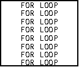
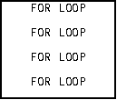
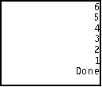
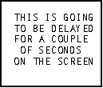
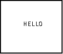
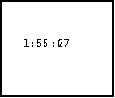

| HOME >> Tutorials >> Tutorial 7: Loops |
Introduction:
In this tutorial, we will learn how to use the For( command. The For( command is used to either count or to do an action more than one time. What if you had a program and you want to display the same text on all eight lines, how would you do it? You could use the Output( command eight times, but that just wastes space (which is very valuable). We can use the For( command to write it those eight times.
New Command:
| For( | Executes everything inside the designated number of times |
For(variable,begin,end[,increment])
The Codes:
There are going to be four separate codes this time. The first one doesn't actually use For(, but it's how we would do it if we didn't have For(. While the first three programs count forwards (...1,2,3...), the fourth program counts backwards (...3,2,1...). The fifth code is very useful in programming games.
| : | For AShell, SOS, and TI-Explorer |
| 0 |
Store 0 into X |
| ClrHome | Clears the home screen |
| Lbl 1 | |
| X+1 |
Add one to X and then re-stores it |
| Output(X,5,"FOR LOOP") | Displays "FOR LOOP" on each line |
| If X<8:Goto 1 | If X is less than eight, go to Lbl 1 |
| Stop | End the program |

This is what we'd have to do if we didn't have For(, because it does the same thing. In fact when most programmers have a lot of commands that they want to be repeated, they use this construction instead of the For loop. The next program does the same exact thing, but it uses the For loop.
| : | For AShell, SOS, and TI-Explorer |
| Lbl 1 | |
| ClrHome | Clears the home screen |
| For(X,1,8) | X is going to be stored from 1-8 |
| Output(X,5,"FOR LOOP") | Displays "FOR LOOP" on each line |
| End | End the For loop |
| Stop | End the program |
When X is stored from 1-8 , it makes the calculator output "FOR LOOP" on each line. At the beginning X is 1 so it is displayed on the first line. Then X is two and it's displayed on the second line, and so on. The Stop command at the end of the program isn't really necessary, but I just felt like adding it. If it wasn't there, the program still would stop after completing the For loop. When you run the program it looks like it just displayed all the lines all at once, but it really didn't. It displayed each one individually, but since the program was so small it did it really quickly. Now the next program will show you how to increment the For loop. The code will look almost like the previous code, but there's one slight difference. See if you can catch it.
| : | For AShell, SOS, and TI-Explorer |
| Lbl 1 | |
| ClrHome | Clears the home screen |
| For(X,1,8,2) | X is stored from 1-8 with increments of 2 |
| Output(X,5,"FOR LOOP") | Displays "FOR LOOP" on every other line |
| End | End the For loop |
| Stop | End the program |

When you run the program, you'll notice that it displayed "FOR LOOP" on every other line. That "2" after the 8 in the For loop is what changed that. The "2" tells the calculator to do every other number between 1 and 8. If you want, change the increment to 3 and see what happens. In the first loop and it would do the exact same thing. However, programmers usually do not put the "1" because it is implied. The next program will count backwards.
| : | For AShell, SOS, and TI-Explorer |
| Lbl 1 | |
| ClrHome | Clears the home screen |
| For(X,6,1,-1) | X is going to be stored from 6-1 |
| Disp X | Displays X |
| End | End the For loop |
| Stop | End the program |

All this does is display the value for X backwards. Notice that you have to put the "-1" there for it to work. In the second program you didn't have to put the "1", because it is implied, but "-1" isn't implied. What would you do if you wanted to your program to pause for a couple of seconds so that the user could look at what's on the screen? What if you had an opening screen, and you wanted the user to take a look at it for a while? The computer has a Pause command (you can jump ahead to Tutorial 8), but you have to press the  key for that. What you really want the program to do is delay for a few seconds. Programmers have figured out that in order to make a delay, you just make the calculator do useless stuff for a while. Here's an example:
key for that. What you really want the program to do is delay for a few seconds. Programmers have figured out that in order to make a delay, you just make the calculator do useless stuff for a while. Here's an example:
| : | For AShell, SOS, and TI-Explorer |
| Lbl 1 | |
| ClrHome | Clears the home screen |
| Output(2,3,"THIS IS GOING") | Displays "THIS IS GOING" on line 2 |
| Output(3,3,"TO BE DELAYED") | Displays "TO BE DELAYED" on line 3 |
| Output(4,3,"FOR A COUPLE") | Displays "FOR A COUPLE" on line 4 |
| Output(5,4,"OF SECONDS") | Displays "OF SECONDS" on line 5 |
| Output(6,3,"ON THE SCREEN") | Displays "ON THE SCREEN" on line 6 |
| For(X,1,500) | This line and the next line are used to |
| End | delay the program for a couple of seconds |
| ClrHome | Clears the home screen |
| Output(4,7,"HELLO") | Displays "HELLO" |
| Stop | End the program |
 and then 
When you ran the program you should have notice that the text stayed on for a while and then the screen cleared and "hello" was displayed. You should use this construction when you want some delay, but you don't the user to have to press the  key. If you want to increase the time that it shows on the screen, just increase the second number. If you want to decrease the time that it shows, decrease the second number.
key. If you want to increase the time that it shows on the screen, just increase the second number. If you want to decrease the time that it shows, decrease the second number.
Version 2.0 Update:
When I made the first version, I totally forgot one inportant aspect of the For loop. I forgot to tell you that you can nest For loops. Nesting For loops can be very helpful. You can use nested For loops to make a stopwatch program. I'm going to give you the code to make a stopwatch program, but it's not going to be perfect. What the calculator says is a second or a minute, may not truly be a second or a minute. I just want to show you how nested For loops work. To make it exact, you'd have to use those delays that I just taught you above. Before running it go through the code and try to understand as much as you can. I'll explain everything after the code.
| : | For AShell, SOS, and TI-Explorer |
| Lbl 1 | |
| ClrHome | Clears the home screen |
| For(A,0,9) | A is going to be stored from 0-9 (minutes) |
| For(B,0,59) | B is going to be stored from 0-59 (seconds) |
| For(C,0,99,7) | C is going to be stored from 0-99 (milliseconds) |
| Output(4,4,A) | Displays A (minutes) |
| Output(4,5,":") | Displays a colon after the minutes value |
| If B9:Then | If B is less than or equal to nine, then |
| Output(4,6,0) | Display a zero, and |
| Output(4,7,B) | Display B (seconds) |
| Else | If that's not true, then |
| Output(4,6,B) | Display B (seconds) |
| End | Ends the seconds-displaying If statement |
| Output(4,8,":") | Displays a colon after the seconds value |
| If C9:Then | If C is less than or equal to nine, then |
| Output(4,9,0) | Display a zero, and |
| Output(4,10,C) | Display C (milliseconds) |
| Else | If that's not true, then |
| Output(4,9,C) | Display C (milliseconds) |
| End | Ends the milliseconds-displaying If statement |
| End | Ends the inner For loop |
| End | Ends the middle For Loop |
| End | Ends the outermost For loop |

Further Explanation:
Okay, I'll explain starting from the beginning of the code. A is going to be our minutes, and I just let it go up to 9 minutes because we really didn't need it to go past that. B is going to be our seconds, that's why it is stored from 0 to 59. Finally, C is going to be our milliseconds. Before I explain how this works let me just tell you why I did some things. The reason I added those two If statements, were simply for aesthetics. It makes the output look better, and the spacing is good. When the values for the seconds or milliseconds are below 10, I want the calculator to display something like "05," but instead it'll just display "5." That's why I have to output that 0 there for the times when those values are under 10, so that it actually looks like a stopwatch. Notice how in the For loop for the milliseconds I added an incrementation. This just makes the program run faster. The calculator cannot come close to displaying every millisecond as fast as milliseconds actually are. So I made the calculator do every 7th number, which makes it closer to actual. Try putting in 1 for the increment and you can see how slowly it runs. Plus when you look at a stopwatch, you really can't see every millisecond anyway. Now there's something really important that I want you to know. You really can't see it in this code, but I'm going to tell you anyway. When you are closing these loops using the End command, you must do that in a certain order. You must close the innermost loop first, and then the next one, and then finally the outermost loop. You really can't see it because there are just 3 End commands in a row. I just don't want you to think that you put the End commands in the same order as the For( commands. Here's how the code works: It goes to the first For loop and sets A (minutes) equal to 0. Then it goes to the next For loop and sets B (seconds) equal to 0. Then it goes to the last For loop and sets C (milliseconds) equal to 0. Then it displays all of the values in a way that it looks like time -- minutes:seconds:milliseconds. After displaying that, it doesn't go back and set A equal to 1, but it sets C equal to 1 and displays everything. Then it goes back and sets C equal to 2 and displays everything. Once C becomes 99 and it displays everything, the "C" For loop is done, because it's gone from 0-99 (incrementing by 7). So since it's done, it goes to the previous For loop -- the "B" For loop. That For loop now sets B equal to 1 and then executes the next line, which is the "C" For loop. So now B is 1 and it goes through the whole "C" For loop again, displaying it each time C is incremented by 7. Once again, when C becomes 99 it goes back to the "B" For loop and makes B equal to 2. Then the program goes to the "C" For loop and does the whole process all over again. This process keeps on happening with B being incremented by one until it gets to be 59. Once it's 59 and has displayed everything, the "B" For loop is done so it goes up to the "A" For loop. The "A" For loop now sets A equal to 1 and does everything all over again. This all may be a little confusing right now, but once you run the program and see what's happening you should understand. I know this is a lot to take in and if you still don't understand please contact me, and I'll explain it a different way. Now the only way of stopping this program is by either pressing  or by pressing
or by pressing  and
and  [QUIT]. For my stopwatch programs I use the command getKey, which allows me to stop the program by pressing a key that I set in the program. If you want to see how that works, you can jump way ahead to Tutorial 21, but you won't understand most of it because it'll use commands that you'll learn in the in between tutorials.
[QUIT]. For my stopwatch programs I use the command getKey, which allows me to stop the program by pressing a key that I set in the program. If you want to see how that works, you can jump way ahead to Tutorial 21, but you won't understand most of it because it'll use commands that you'll learn in the in between tutorials.
Conclusion:
So now another aspect of programming is complete! I usually use the For loop for delaying more than what it's actually for (counting). Well, let's go to the next tutorial, which is on pausing, using the Pause command.
If you do not understand a particular part in this lesson, have suggestions, or find any problems please contact me.
 |
 |
| Tutorial 6 | Tutorial 8 |